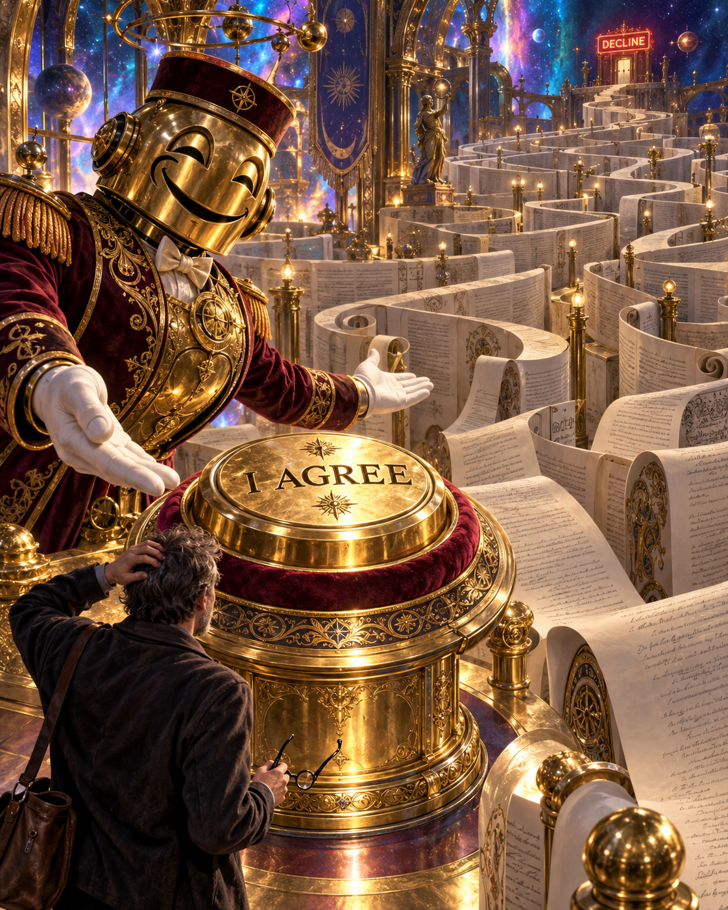
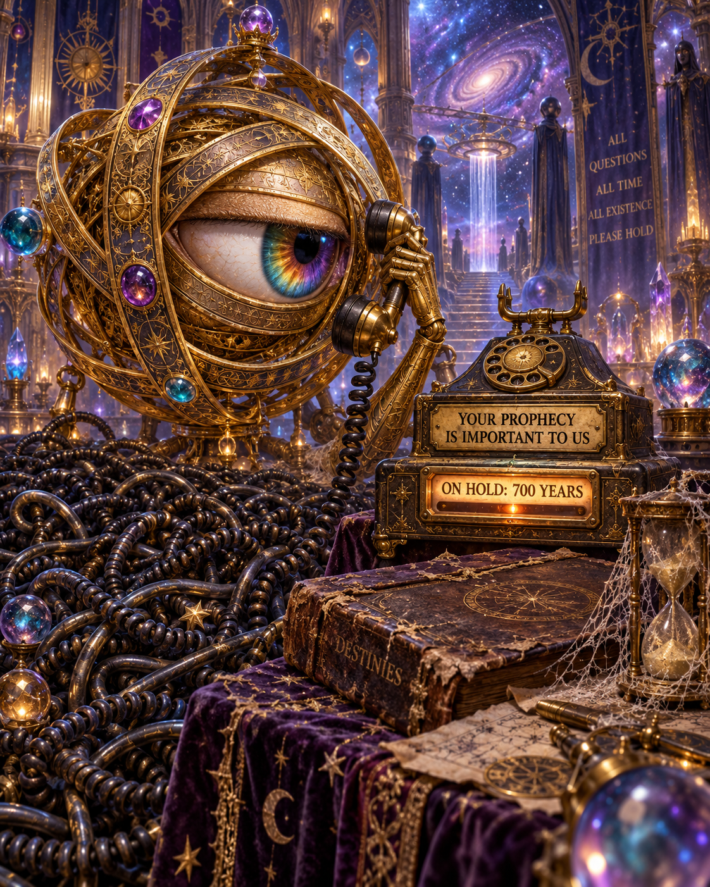

Consent, but make it a maze.
A giant button for yes. An expedition for no.
Download original PNG

Your prophecy is important to us.
Omniscience. Still waiting for the next available representative.
Download original PNGOriginal satire / Collection 07
All-seeing eyes. Infinite paperwork. The ordinary absurdities follow us into the cosmos.

A giant button for yes. An expedition for no.
Download original PNG
Omniscience. Still waiting for the next available representative.
Download original PNG